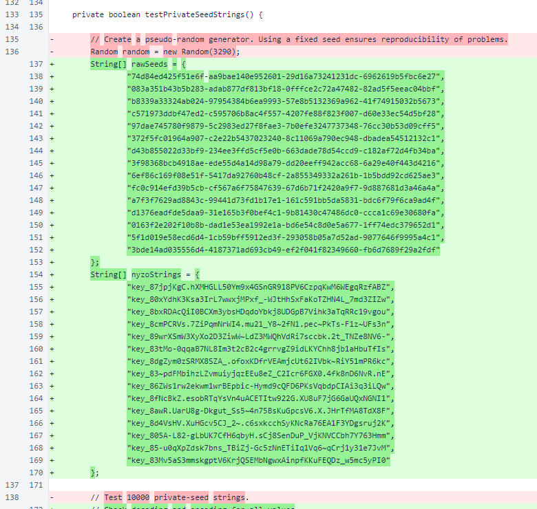
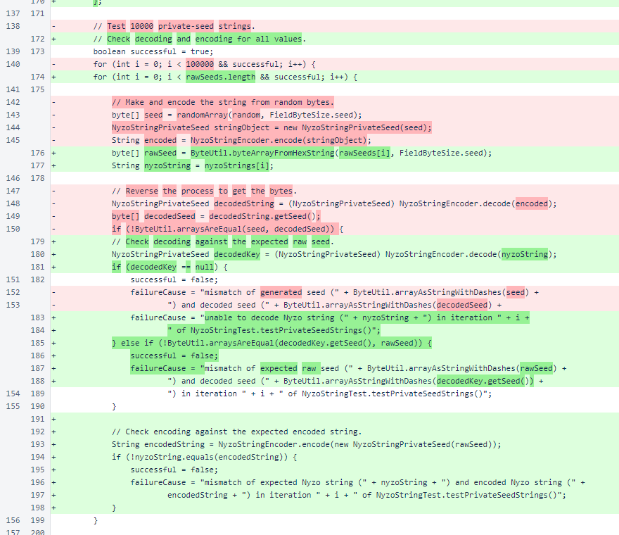
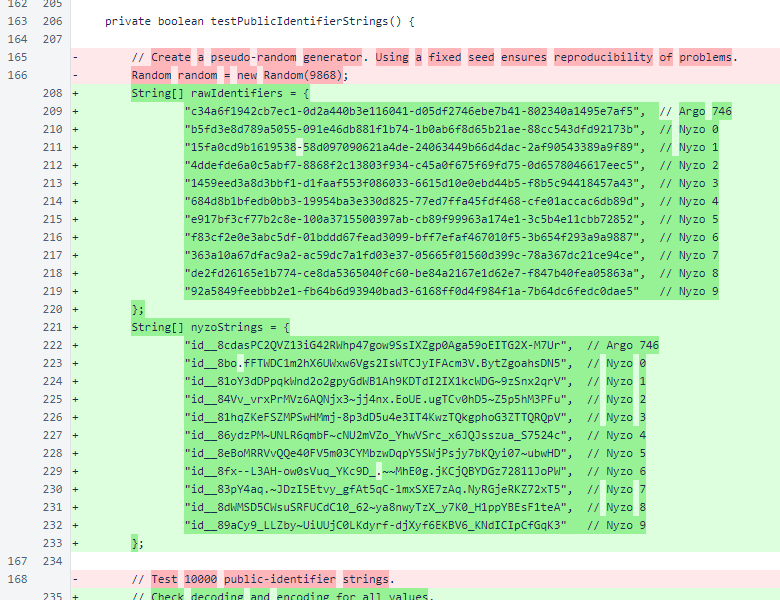
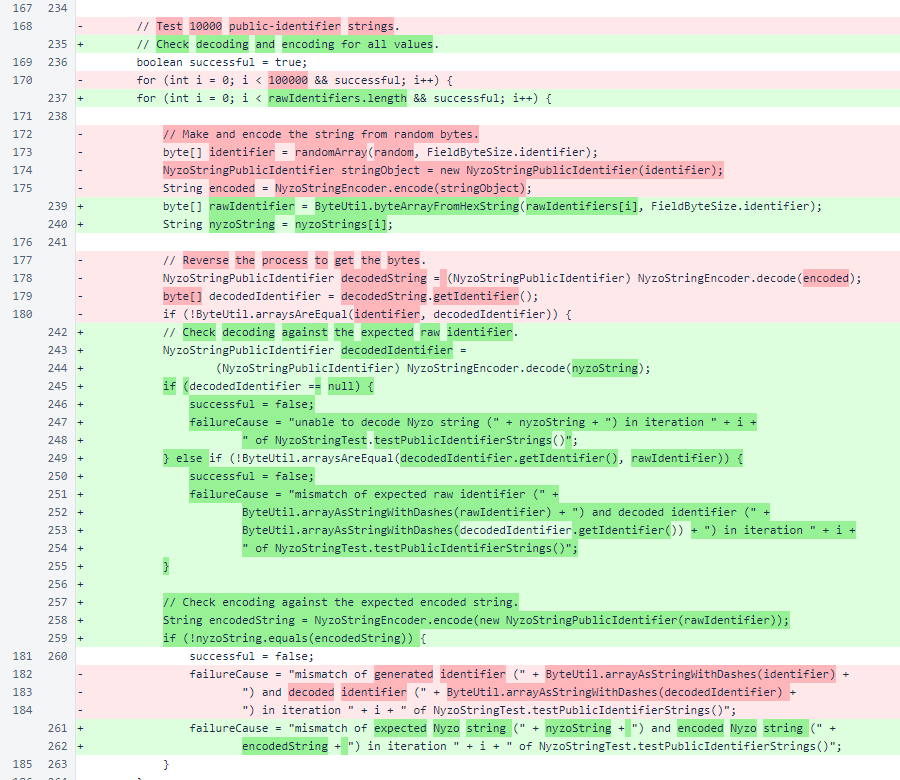

Nyzo 642: updated NyzoString tests
Nyzo version 642
(commit on GitHub) improves the tests for
NyzoStringPrivateSeed and
NyzoStringPublicIdentifier, bringing both tests to parity with the tests
in the PHP code for the WordPress plugin.
This version does not affect any run modes.
One of the many enjoyable aspects of porting code to a different language is the opportunity it provides to
reconsider the function of the old code subject to porting. In porting the tests of
NyzoString encoding and decoding, we found the old Java tests lacking. The
original tests would generate random values, encode them to NyzoString objects,
and decode them back to byte arrays. While this ensured a symmetrical encoding and
decoding process, it did not ensure consistency in the encoded representation.
These updated tests use literal values to ensure consistency of encoded representations in addition to the
previously assured lossless round-trip of encoding and decoding.
In NyzoStringTest.testPrivateSeedStrings(), the
pseudorandom generator was removed and literal values were added. The values provided are the first fifteen values
that were generated by the previous version of this method.

The round-trip encoding and decoding check was removed, and separate decoding and encoding checks were added.

In NyzoStringTest.testPublicIdentifierStrings(), some
well-known identifiers were used as test values.

The changes in this method parallel the changes to the private-seed test.
